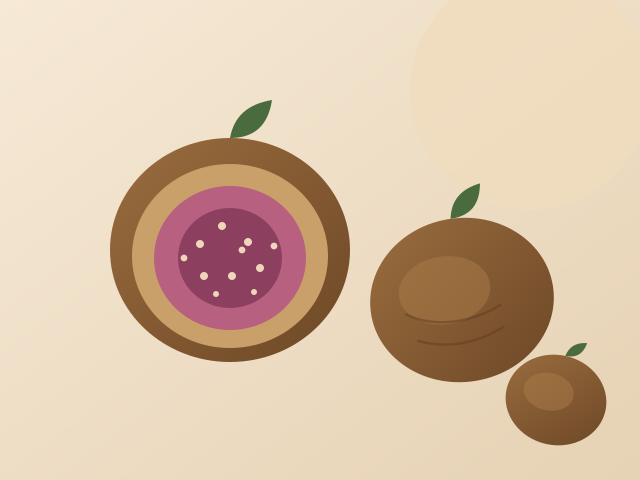

Lerida
Our premium grade. Large, pale figs pressed into an even round and laid in a single layer. The presentation buyers choose for gift and premium retail lines.

The Sarilop variety grown around Aydin and the Buyuk Menderes valley is the reference point for dried figs worldwide. Warm days, dry nights and calcareous soil concentrate the sugars until the fruit dries to a deep amber with a chewy, jam-like centre.
We contract our gardens by the tree rather than by the tonne, which means growers can leave the fruit to fall naturally instead of picking early. It costs more and it is the single biggest reason our figs taste the way they do.
| Botanical name | Ficus carica, Sarilop variety |
|---|---|
| Origin | Aydin, Türkiye |
| Grades | Lerida, Protoben, Baglama, Garland, Pulled, Industrial |
| Calibre | No.1 (≤38 pcs/kg) to No.6 (≤110 pcs/kg) |
| Moisture | 22–24% |
| Ingredients | 100% dried figs (natural grades). Sulphur-free. |
| Harvest | August – September, shipped year-round |
| Shelf life | 12 months at 4–18 °C, 65% RH |
| HS code | 0804.20 |
Snacking and cheese boards, breakfast cereals and bars, bakery fillings and pastes, confectionery inclusions, fig-based beverages and infusions.
Turkish dried figs are traded by shape and presentation as much as by size. These are the forms we pack — each one available as a retail unit or as bulk for further processing.
Our premium grade. Large, pale figs pressed into an even round and laid in a single layer. The presentation buyers choose for gift and premium retail lines.
Whole figs shaped by hand, a step below Lerida in calibre and uniformity but the same fruit. The workhorse grade for everyday retail packs.
Figs pressed and packed in tied, layered rows — the traditional Aegean market presentation, still the format many wholesalers ask for by name.
Figs threaded into a ring the way village households have stored them for generations. A strong seasonal and delicatessen line.
Figs opened and flattened by hand, which gives a softer bite and a fast-selling bagged format for supermarket shelves.
Selected figs laid flat in a shallow tray so the fruit arrives unmarked. Our best-looking small pack, and the one we recommend for gifting.
Smaller, elongated figs in bulk cartons. Priced for industrial buyers making pastes, fillings, bars and infusions.
Rice-floured fig dice cut to a consistent cube for bakery, cereal and confectionery lines. Other cut sizes on request.
Every grade ships in food-grade lined cardboard cartons, with wooden crates available for bulk lots. Retail units can carry your own label and barcode.
Ask for the current price listWe ship a graded sample set free of charge to qualified buyers.